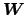
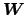

The expression for the matrix of second partial derivatives is somewhat different from that derived in the binomial case, since the equations in Eq. 37 differ depending on whether or not
 .
.
For the diagonal elements of the matrix of second partial derivatives, i.e., where
 , let
 be a square matrix of order
, let
 be a square matrix of order  , with elements
, with elements
 on the diagonal and zeros everywhere else. Then, Eq. 22 generates a
on the diagonal and zeros everywhere else. Then, Eq. 22 generates a
 matrix. However, we can only use this formulation for the diagonal elements. For the off-diagonal elements, where
matrix. However, we can only use this formulation for the diagonal elements. For the off-diagonal elements, where
 , define
as a diagonal matrix with elements
, and use the negative of the expression in Eq. 22.
, define
as a diagonal matrix with elements
, and use the negative of the expression in Eq. 22.
Using this dual formulation for , each step of the Newton-Raphson method can proceed as in the binomial logistic regression model, using Eq. 23.